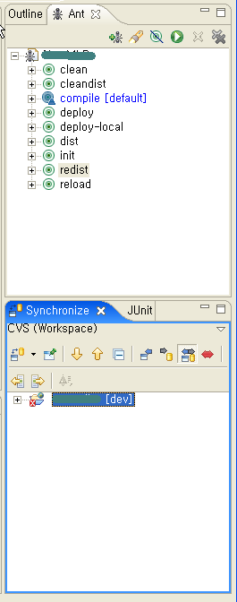
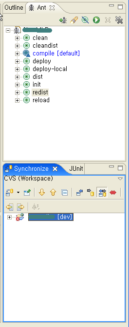

Eclipse 에서 가장 많이 사용하는게 뭘까? 에디터 빼고...
나 같은 경우에는 Ant 와 CVS Synchronize(동기화) 이다.
Ant는 특히 톰캣 리로딩을 위해 자주 사용하는 편이다.(톰캣 자동 리로딩 기능을 별로 안좋아한다)
그리고 Synchronize는 나의 결벽증 때문인지 ... 아무튼 절대로 직접 Commit/Update를 하지 않고 항상 Synchronize를 한 다음에 Commit/Update를 해서 매우 자주 사용하게 된다.
지금까지 바보같이 Ant build.xml 파일을 열고, Outline에 나온 Ant 태스크 목록에서 오른쪽 단추를 눌러 실행하는 불편함을 감수하고 살았다. Synchronize의 경우에도 프로젝트에서 오른쪽 단추를 눌러서 메뉴를 찾아다니며 했다.
근데, NewsGroup에 질문해보니 원래 이처럼 자주 쓰이는 메뉴가 뷰로 따로 존재했다..
엥.. 바로 더블클릭만 하면 원하는 기능이 실행되는걸... --;
Eclipse 3.1 부터 되는건지 3.0이전 부터 원래 됐던건지는 모르겠다...
바보바보바보야~~~
Show View 목록에 있는 것들 여행좀 해봐야 쓰겠다.

나 같은 경우에는 Ant 와 CVS Synchronize(동기화) 이다.
Ant는 특히 톰캣 리로딩을 위해 자주 사용하는 편이다.(톰캣 자동 리로딩 기능을 별로 안좋아한다)
그리고 Synchronize는 나의 결벽증 때문인지 ... 아무튼 절대로 직접 Commit/Update를 하지 않고 항상 Synchronize를 한 다음에 Commit/Update를 해서 매우 자주 사용하게 된다.
지금까지 바보같이 Ant build.xml 파일을 열고, Outline에 나온 Ant 태스크 목록에서 오른쪽 단추를 눌러 실행하는 불편함을 감수하고 살았다. Synchronize의 경우에도 프로젝트에서 오른쪽 단추를 눌러서 메뉴를 찾아다니며 했다.
근데, NewsGroup에 질문해보니 원래 이처럼 자주 쓰이는 메뉴가 뷰로 따로 존재했다..
* Window -> Show View -> Other -> Ant -> Ant
* Window -> Show View -> Other -> Team -> Synchronize
엥.. 바로 더블클릭만 하면 원하는 기능이 실행되는걸... --;
Eclipse 3.1 부터 되는건지 3.0이전 부터 원래 됐던건지는 모르겠다...
바보바보바보야~~~
Show View 목록에 있는 것들 여행좀 해봐야 쓰겠다.
